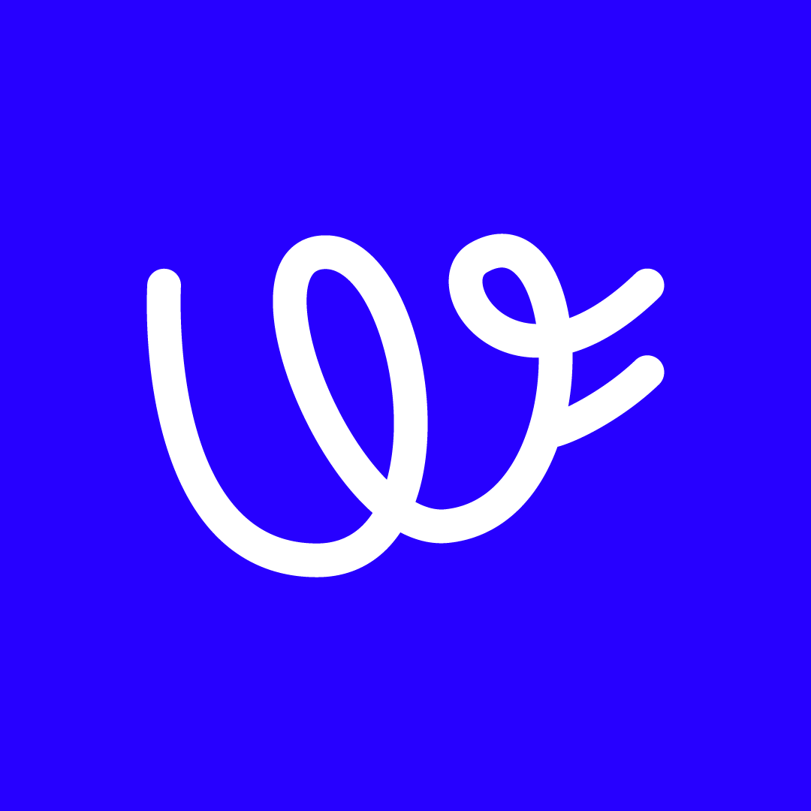
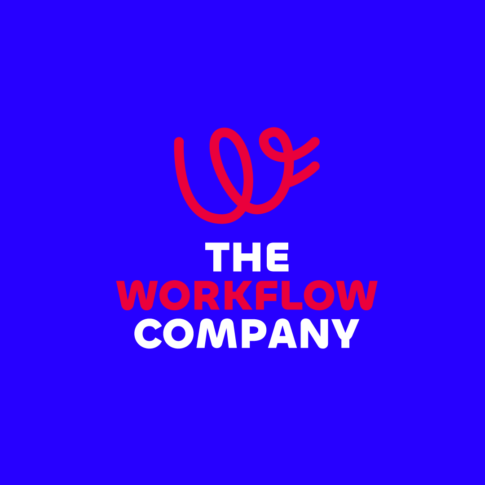

Partnership Anual · Mayo 2026
Adopción y evolución
del espacio de trabajo
en Notion
Propuesta de acompañamiento estratégico para
Viajero Hostels

Resumen Ejecutivo
Los 3 retos
$17,784 USD/año en licencias sin retorno medible. 78 de 152 licencias inactivas.
Solo 18% del equipo con uso consistente. El sistema corre riesgo de quedarse en "primera intención".
0 horas/mes de mantenimiento del sistema. Sin acompañamiento, en 6 meses el equipo regresa a Excel.
La meta a 12 meses
Adopción mensual
Adopción profunda
Licencias sin retorno
La propuesta
Partnership anual con 5 pilares: inteligencia de adopción, evolución del workspace, nuevas capacidades, automatización & IA, y gobierno interno.
Equipo TWC dedicado: Sebastián, Roxana, Daniela y Camila.
La inversión
$23,460 USD/año
Pago anticipado con 15% de descuento.
Equivale al 68% de la inversión en licencias.
Alternativa: $2,300 USD/mes
Contexto
Viajero Hostels es una cadena de hostales con presencia en más de 9 países y más de 30 sedes en Latinoamérica. En los últimos 4 meses, juntos construimos las bases del sistema operativo en Notion.
5
Departamentos con espacio propio
26
Subáreas configuradas
149
Personas con acceso
152
Licencias Business
12+
Archivos Excel migrados
10
Sesiones de capacitación
Diagnóstico
Durante el cierre del proyecto identificamos los siguientes retos para los próximos 12 meses:
$17,784
USD/AÑO SIN RETORNO
78 de 152 licencias activas no se están usando. Viajero pagó $34,656 USD/año por Notion Enterprise y hoy no existe un sistema que muestre cuántas personas realmente usan la herramienta.
18%
ADOPCIÓN PROFUNDA
Solo 27 de 152 personas muestran uso semanal sostenido. El sistema corre riesgo de quedarse en "primera intención de uso" — funcional sobre el papel, irrelevante en el día a día.
0 hrs
MANTENIMIENTO MENSUAL
Nuevas áreas, integración con Teams, automatizaciones, IA — todo en lista de espera. Sin acompañamiento, en 6 meses el equipo regresa a Excel y WhatsApp.
Urgencia
El 30% de las licencias de software corporativo nunca se usan y el 70% de las transformaciones digitales fallan por baja adopción. La diferencia está en lo que pasa entre el día 60 y 90 post-implementación.
| Horizonte | Qué pasa si nada cambia | Impacto en USD |
|---|---|---|
| Hoy | 78 personas inactivas. Solo 27 con uso consistente. Cero medición. | $17,784/año |
| 6 meses | Los 47 usuarios frágiles caen a inactivos. ~100 personas dormidas. Erosión del hábito en los 27 consistentes. | ~$22,800/año |
| 12 meses | Renovación en zona de riesgo. Posibilidad real de que Viajero corte el contrato Enterprise y vuelva a Excel/WhatsApp. | $34,656 |
Nuestra propuesta
Modelo de acompañamiento anual y mejora continua
Propuesta
Nuestra propuesta es un partnership de 12 meses donde TWC se convierte en el socio estratégico de Viajero para que Notion se adopte, se mantenga vivo y evolucione con la operación.
Este modelo permitirá
Medir la adopción real cada semana con Analytics TWC.
Construir nuevos flujos por área a medida que aparecen las necesidades.
Transferir capacidad interna para que Viajero opere con creciente autonomía.
Modelo
1
Inteligencia de adopción
Medición semanal con Analytics TWC, diagnóstico de uso, identificación de áreas en riesgo, trainings focalizados, programa de champions internos.
2
Evolución del espacio de trabajo
Iteración mensual sobre flujos existentes, corrección de fricciones detectadas, optimización de bases de datos, vistas y permisos.
3
Nuevas capacidades
Construcción trimestral de nuevos módulos por área priorizados con la sponsor.
4
Automatización e IA
Activación gradual de automatizaciones e inteligencia artificial dentro de Notion, alineada al ritmo real del equipo.
5
Gobernanza y autonomía
Definición de reglas de uso, formación de champions, documentación y transferencia de conocimiento progresiva.
Analytics TWC · Datos reales
152
Licencias adquiridas
$34,656 USD/año
74
Activas en los
últimos 30 días
78
No entraron a Notion
en 30 días
Es como si Viajero pagara 78 sueldos de software que nadie abre.
Eso representa $17,784 USD/año en licencias sin retorno medible hoy. Si la curva se mantiene 6 meses más, ese número sube a ~$22,800 USD/año.
Datos extraídos del espacio de trabajo de Viajero con Analytics TWC · ventana: últimos 30 días.
Producto
El primer producto que mide adopción real de workspaces de Notion. Notion no entrega esta visibilidad de forma nativa. Analytics TWC sí.
🔍
Hacer visible lo invisible
Saber exactamente qué áreas, equipos y personas están usando Notion — y cuáles no. Sin encuestas, sin reuniones.
⭐
Amplificar power users
Detectar a quienes sostienen el sistema y convertirlos en Champions internos antes de que se quemen solos.
🚨
Detectar abandonos a tiempo
Ver caer la actividad de un equipo en tiempo real — no en la encuesta de fin de año cuando ya volvieron a Excel.
🎯
Capacitaciones con data
Atacar exactamente las áreas y módulos que la data muestra como críticos. Cada capacitación tiene razón medible.
💸
Convertir la inversión en un activo medible
Pasar de "creemos que está rindiendo" a "estos son los $X que recuperamos este mes y estos son los $Y que aún están en riesgo".
Primer vistazo
Esto es solo el primer vistazo de las 4 dimensiones de adopción.
🎯 Alcance
49%
74 de 152 personas activas en los últimos 30 días
¿Quiénes son las 78 personas que no han entrado? ¿Es por área? ¿Es por rol?
📚 Profundidad
—
Próximo entregable
En la primera semana: mapa de qué bases de datos están vivas, abandonadas o redundantes.
🔄 Consistencia
2.7 días/sem
Solo 27 de 74 activos (36%) muestran uso consistente semana tras semana
¿Es hábito o ráfaga? ¿Son siempre los mismos pocos?
💬 Colaboración
5 top users
Carlos Garzón (18) · María Cristina S. (10) · Andrea Torres (4) · Juan Villegas (3) · Fabricio Carrión (3)
¿Estos 5 son los Champions naturales?
Lo que ven aquí es solo un vistazo. El partnership les entrega esta lectura cada lunes, con análisis y plan de acción.
Acción
| Lo que vemos hoy en Viajero | Lo que haríamos en el partnership |
|---|---|
| 49% de adopción · 78 personas inactivas | Sesión 1:1 con cada líder de área para entender por qué su equipo no entró. Plan de reactivación focalizado en los primeros 30 días. |
| 2.7 días activos/semana · solo 27 usuarios consistentes | Diseño de rituales semanales en Notion: standups, weekly review, cierre mensual. Blindar a los 47 usuarios frágiles antes de que se vuelvan inactivos. |
| Bases de datos sin diagnóstico | Mapeo completo en la primera semana. Decisión por base de datos: simplificar, re-entrenar al equipo, o eliminar. |
| Solo 2 personas concentran la mitad de la colaboración | Programa formal de Champions liderado por Carlos y María Cristina. Cada uno arrastra a 5–7 personas más en los primeros 90 días. |
| 51% de licencias sin retorno medible | Reporte mensual a Diana con: usuarios reactivados, licencias en riesgo, recomendación de reasignación. |
Roadmap
Estabilizar y reactivar
Cerrar la brecha de adopción
- Reactivación de las 78 personas inactivas
- Integración con Teams
- Programa de Champions
- Limpieza de bases de datos
- Primer Índice de Adopción TWC
Construir hábito
Convertir el uso en rutina
- Rituales semanales por área
- 2 nuevos flujos por área
- Primera automatización
- Sponsor review trimestral
Activar IA y escala
Pilotar inteligencia artificial
- Pilotos con Notion AI en 2 áreas
- Agentes de Notion para flujos repetitivos
- 2 nuevos flujos
- Optimización mobile
Consolidar autonomía
Transferir capacidad interna
- Documentación completa del sistema
- Formación avanzada de champions
- Onboarding automatizado
- Retro anual y plan de continuidad
Operación
Semanal
Reporte automático del Índice de Adopción TWC (cada lunes, sin reunión)
2 horas de office hours abiertas para el equipo de Viajero (Slack o llamada bajo demanda)
Mensual
1 reunión de 60 min con Diana — lectura del reporte + plan de acción
1 sesión de 60 min con el grupo de Champions internos
Reporte ejecutivo con hallazgos, acciones y recomendaciones
Trimestral
Sponsor review estratégico de 90 min — OKRs, priorización, nuevos flujos
Entrega de 2 nuevos flujos/módulos del trimestre
Entrega de la integración o automatización del trimestre
2 sesiones de capacitación focalizada (90 min c/u)
Alcance
Por mes
- 1 reporte de adopción
- 1 reunión de revisión (60 min)
- 2 horas de office hours
- 1 sesión con Champions (60 min)
Por trimestre
- 2 nuevos flujos o módulos
- 1 integración o automatización
- 2 capacitaciones focalizadas
- 1 sponsor review (90 min)
- Ajustes menores en flujos existentes
- Soporte consultivo asincrónico
- Recomendaciones tácticas basadas en data semanal
- Onboarding de hasta 10 nuevos ingresos al año
- Implementación de un nuevo departamento completo
- Migraciones masivas de datos
- Construcción de productos custom (ej. agentes IA dedicados)
- Eventos presenciales o trainings on-site
KPIs
Al cierre de los 12 meses, Viajero habrá movido sus indicadores de adopción a:
| Indicador | Hoy | Meta a 12 meses | |
|---|---|---|---|
| Tasa de adopción mensual | 49% | → | ≥75% |
| Adopción profunda (uso consistente) | 18% | → | ≥60% |
| Días activos por semana | 2.7 | → | ≥3.5 |
| Licencias sin retorno medible | 78 | → | ≤25 |
| Champions internos formados | 2 | → | ≥8 |
| Áreas con flujos completos en Notion | 1 | → | 5 |
Estas metas se revisan en el sponsor review trimestral y se ajustan según el comportamiento real del equipo.
Diferencial
| Implementación (cerrada en abril 2026) | Partnership (próximos 12 meses) |
|---|---|
| Proyecto de duración fija con alcance cerrado | Acompañamiento continuo a un sistema vivo |
| Construir las bases del workspace | Lograr que esas bases se adopten, se mantengan vivas y evolucionen |
| Capacitación inicial al equipo | Formación continua + Champions internos + refuerzo de hábitos |
| Resultado: el sistema existe | Resultado: el sistema se usa, genera retorno y crece con la operación |
Inversión
Pago mensual
$2,300 USD/mes
$27,600 USD anuales
Incluye: Analytics TWC sin costo adicional · Equipo dedicado: Sebastián, Roxana, Daniela y Camila · 12 meses · Revisión trimestral con Diana · Renovación a discutir al cierre.
+35
Equipos transformados en +5 países de Latinoamérica
+750
Miembros en la Comunidad de Notion Colombia
6
Certificaciones oficiales de Notion
Startups · Agencias · PYMES y mid-market · ONGs y Fundaciones
Cierre
Validación de la propuesta con Diana
Alineación final sobre alcance y modalidad de pago.
Firma del acuerdo de partnership
12 meses con revisión trimestral.
Kick-off del partnership — primera semana
Conexión de Analytics TWC · Primer Índice de Adopción · Mapeo de bases de datos · Sesiones 1:1 con líderes de área.
Primer Sponsor Review — cierre del Q1
Revisión de OKRs del partnership al cierre del mes 3.
El siguiente paso es de ustedes.